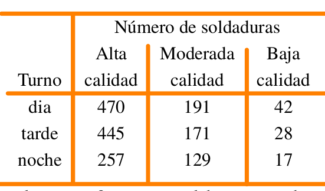

La compañía de dulces Mars publica en su sitio web información relacionada con los porcentajes de los distintos colores de sus dulces M|M para la variedad de chocolate con leche.
Color contenido en la bolsa
| café | amarillo | rojo | azul | naranja | verde | |
|---|---|---|---|---|---|---|
| Porcentaje (%) | 13 | 14 | 13 | 24 | 20 | 16 |
Con el fin de validar los publicado por la compañia en su página web, se compra una bolsa de dulces y se cuentan las frecuencias de los colores contenidos en la bolsa
Se podria afirmar que los datos anteriores respaldan la información suministrada por la compañía en su sitio web? Sustente su respuesta.
En una línea de producción los artículos se inspeccionan en forma periódica con el fin de detectar defectos. La siguiente secuencia de artículos defectuosos (D) y no defectuosos (N) corresponde a la producción de uno de los turnos.
inspeccion = sample(c("D", "N"), 50, replace = TRUE)
inspeccion [1] "D" "D" "D" "D" "D" "D" "D" "N" "D" "N" "D" "D" "N" "D" "D" "D" "N" "N" "N"
[20] "N" "N" "D" "N" "N" "D" "D" "D" "D" "D" "N" "D" "N" "N" "D" "N" "N" "D" "N"
[39] "N" "D" "N" "D" "D" "D" "N" "D" "N" "N" "D" "D"Se puede afirmar que los datos no presentan patrón alguno y que la generación de artículos defectuosos se debe al azar? . Utilice un \(\alpha= 0.05\).
En una planta ensambladora de camiones la supervisión diaria de las soldaduras generó la siguiente información :

x=c(470,445,257,191,171,139,42,28,17)
m=matrix(x, ncol = 3)
colnames(m) = c("alta", "moderada", "baja")
rownames(m) = c("dia", "tarde", "noche")
m alta moderada baja
dia 470 191 42
tarde 445 171 28
noche 257 139 17¿Se puede concluir que la calidad varia con los turnos?, en otras palabras se puede concluir que la calidad de las soldaduras es independiente de los turnos? . Utilice un nivel de significancia \(\alpha=0.05\).
Los siguientes datos corresponde a las notas obtenidas por un grupo de estudiantes de la asignatura Matemáticas Fundamentales. Si la distribución de los datos es normal, podría afirmar que la prueba realizada es una prueba normalizada. En caso contrario serviría para estudiar problemas relacionados con su aprendizaje. Para un \(\alpha= 0;05\), se podría afirmar que los datos proceden de una distribución normal? . Si se requiere realizar una prueba de hipótesis sobre la media de la nota \(H_{o}:\mu \leq 3.3\) vs \(H_{a}: \mu > 3.3\), ¿Que prueba se realizaría?
x=c(3.4, 2.8, 4.2, 2.1, 2.8, 2.4, 3.5, 4.2, 3.1, 4.1, 2.4, 3.4, 4.1, 4.0, 2.4, 4.1, 3.4, 4.4, 3.8, 3.7, 2.2, 3.6, 2.3, 3.7, 2.8, 4.1, 2.3, 4.6, 4.6, 5.2, 2.4, 2.4, 2.7, 3.8, 4.6, 4.4, 4.2, 4.4, 2.4, 3.3, 3.8, 2.9, 3.1, 2.7, 3.6, 3.8, 4.4, 3.9, 2.8, 3.7)
x [1] 3.4 2.8 4.2 2.1 2.8 2.4 3.5 4.2 3.1 4.1 2.4 3.4 4.1 4.0 2.4 4.1 3.4 4.4 3.8
[20] 3.7 2.2 3.6 2.3 3.7 2.8 4.1 2.3 4.6 4.6 5.2 2.4 2.4 2.7 3.8 4.6 4.4 4.2 4.4
[39] 2.4 3.3 3.8 2.9 3.1 2.7 3.6 3.8 4.4 3.9 2.8 3.7Una muestra aleatoria de 90 adultos se clasifica de acuerdo al genero y el núumero de horas que dedica a ver el celular durante una semana:
library(knitr)
library(kableExtra)
# Datos
datos <- matrix(c(29, 19, 15, 27), nrow = 2, byrow = TRUE)
colnames(datos) <- c("Masculino", "Femenino")
rownames(datos) <- c("más de 25 horas", "menos de 25 horas")
# Crear tabla
tabla <- kable(datos, align = "c", caption = "Horas diarias dedicadas a ver televisión")
# Estilizar tabla
tabla <- tabla %>%
kable_styling(full_width = FALSE) %>%
add_header_above(c(" " = 1, "género" = 2))
# Mostrar tabla
tabla| Masculino | Femenino | |
|---|---|---|
| más de 25 horas | 29 | 19 |
| menos de 25 horas | 15 | 27 |
Utilice un nivel de significancia del 0 . 05 y pruebe la hipótesis de que el tiempo dedicado a ver televisión es independiente de si el espectador es hombre o mujer.
Realiza un mapa mental sobre las pruebas de hipótesis, que incluya: nombre de la prueba, Ho, Ha, su estadístico de prueba, la distribución que sigue el estadístico de prueba y en que casos se utiliza.